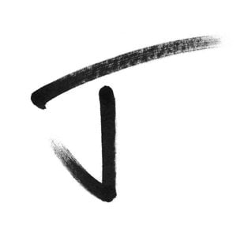

Here are some of my charecters and a bit about them.
Black Jay
Black Jay is a daranged abomanation, even by the sterotypes for teiflings not only has he made a pact with two seperit gods he has also sidded himslef with the queen of dragons. While once an adventure for good he soon became the unliving hand of chaos. chosen as one of the champones of evil he is sent on a secert mission with his party his only hope is to let humans have the monster they claim teiflings are.
Jax Hunter A.K.A. The Last Line
Jax Hunter livied a happy life as a child to farmers on a planet located far from earth, however his happy life ended at the age of 4, when his world was attacked by demon a worshiping cult. They sacraficed his parents to there patrion god of chaos, while there god's true name was sacraed and never to be said his symbole was known thoewought the land.
He was saved by a group of people, that were hunting the cult however these people were no better then the people they hunted. They brought him to their ship and turned him into a slave. He spent 17 years on that ship before getting the chance of a lifetime. The crew had been atacked by the goverment while cought traficking armor and weapons to the blackmarket. The crew had left to defened there ship from the bording party when they returned, Jax was in the armor. There were no survivers, He now hunts all that dare break the law.